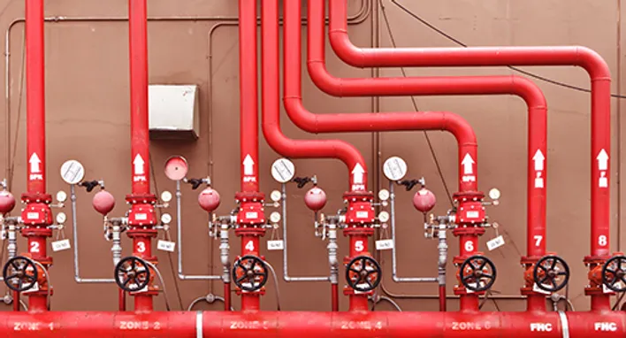

DETAY BİLGİ

SULU YANGIN SÖNDÜRME SİSTEMLERİ
Yangın güvenliği, can ve mal kaybını önlemek adına her yapının öncelikli olarak ele alması gereken temel konulardan biridir. Bu bağlamda en yaygın ve etkili uygulamalardan biri olan sulu yangın söndürme sistemleri, otomatik müdahale kabiliyeti sayesinde yangının başlangıç anında kontrol altına alınmasını sağlayarak büyük felaketlerin önüne geçmektedir.
Sulu söndürme sistemleri, yangınla mücadelede hem müdahale hızını artırmak hem de yangının yayılmasını önlemek amacıyla tasarlanmış modern ve güvenilir sistemlerdir. Sistem; su kaynağı, pompa grubu, borulama ve sprinkler başlıklarından oluşur. Her biri özel mühendislik hesaplamalarıyla seçilen bu bileşenler, bina tipi, risk grubu ve kullanım amacına göre optimize edilir.
Sistemin temel bileşenleri:
1. Su Kaynağı
- Sistem için gerekli suyun sağlandığı ana kaynaktır.
- Su deposu, yangın suyu tankı, şehir şebekesi veya doğal su kaynakları kullanılabilir.
2. Yangın Pompa Grubu
- Sisteme gerekli basınç ve debide suyu iletmek için kullanılır
- Genellikle elektrikli pompa, dizel pompa ve jokey (yoklama) pompası birlikte çalışır.
3. Borulama Tesisatı
- Su, pompadan yangın bölgesine borular aracılığıyla taşınır.
- Borular genellikle galvanizli çelik, siyah çelik veya CPVC malzemelerden yapılır.
4. Kontrol Vanaları
- Sistemin su geçişini kontrol etmek ve bakımlar sırasında müdahale etmek için kullanılır.
- Alarm vanası, kuru sistem vanası, test ve drenaj vanası
5. Alarm ve Gösterge Elemanları
- Yangın sırasında alarm verir ve durumu izlemeyi sağlar.
- Basınç göstergeleri, akış anahtarları, alarm zilleri, ışıklı/sesli uyarılar
6. Test ve Drenaj Hatları
- Sistemin test edilmesi ve bakım sırasında suyun boşaltılması için kullanılır.

SULU Söndürme Sistemleri Çeşitleri
1. Sprinkler Sistemleri
- Açıklama
Belirli bir sıcaklığa ulaştığında otomatik olarak su püskürterek yangını kontrol altına alan veya söndüren, etkili bir yangın söndürme sistemidir. - Kullanım Alanları:
Özellikle ofisler, depolar, fabrikalar, alışveriş merkezleri, hastaneler ve oteller gibi büyük ölçekli ticari ve endüstriyel binalarda kullanılır.
2. Yangın Dolapları Sistemi
- Açıklama
Yangın dolapları, bina içinde kolayca erişilebilir noktalara monte edilen ve yangına ilk müdahaleyi yapmak için gerekli ekipmanları (hortum, lans, vanalar) içeren, pratik ve etkili bir yangın güvenlik sistemidir. - Kullanım Alanları:
Konutlar, iş yerleri, okullar, hastaneler, oteller ve alışveriş merkezleri gibi insanların yoğun olduğu tüm kapalı alanlarda bulunur.
3. Hidrant Sistemleri
- Açıklama
Hidrant sistemleri, özellikle binaların dışında veya açık alanlarda meydana gelebilecek büyük ölçekli yangınlara karşı, itfaiye ekiplerinin kolayca su temin etmesini sağlayan ve yangınla mücadelede kritik bir rol oynayan dışarıdan müdahale sistemleridir. - Kullanım Alanları:
Sanayi bölgeleri, fabrika sahaları, siteler, depolar, alışveriş merkezlerinin açık otoparkları ve geniş bahçeli konutlar gibi büyük açık alanlarda kullanılır.
4. Su Perdesi Sistemleri
- Açıklama
Su perdesi sistemleri, binalar arasında veya bir binanın farklı bölümleri arasında yangının yayılmasını engellemek amacıyla, duvar veya cam yüzeyler üzerinde bir su bariyeri oluşturarak yangına karşı koruma sağlayan sistemlerdir. - Kullanım Alanları:
Özellikle yüksek riskli alanların ayrılmasında, komşu binaların birbirine yakın olduğu bölgelerde, kapalı otopark giriş-çıkışlarında ve asansör kapıları gibi hassas noktalarda kullanılır.
5. Monitörlü Su Sistemleri
- Açıklama
Monitörlü su sistemleri, yüksek debili su veya köpük püskürtebilen, uzaktan kumanda edilebilir veya otomatik olarak yönlendirilebilen, yangın söndürme monitörlerinden oluşan ve özellikle büyük yangınlara karşı etkili bir şekilde müdahale imkanı sunan sistemlerdir. - Kullanım Alanları:
Petrol rafinerileri, limanlar, uçak hangarları, büyük kimyasal tesisler, tank çiftlikleri ve gemiler gibi yüksek yangın riski taşıyan endüstriyel alanlarda kullanılır.
SONUÇ
Sulu yangın söndürme sistemleri, modern binaların yangın güvenliği stratejilerinin en temel ve vazgeçilmez unsurlarından biridir. Bu sistemler, yangının türüne ve risk seviyesine göre sprinkler sistemleri, yangın dolapları, hidrant sistemleri, su perdesi sistemleri ve monitörlü su sistemleri gibi çeşitli çözümler sunar. Gelişmiş teknolojileri sayesinde yangını otomatik olarak algılar ve anında müdahale ederek hem can güvenliğini sağlar hem de maddi kayıpları en aza indirir. Yangınla mücadelede pasif korumanın ötesine geçerek aktif bir savunma mekanizması oluşturan bu sistemler, binalarınızı ve içindeki değerleri yangına karşı güvence altına almanın en etkili yoludur.